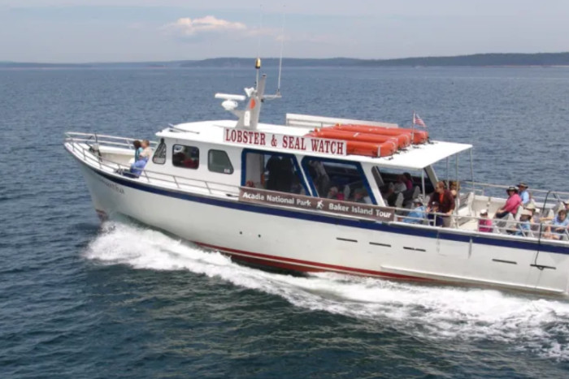

ER - 24/7
Mount Desert Island Hospital Emergency Department
10 Wayman Lane, Bar Harbor, ME 04609Closest hospital for allergy emergencies while staying at Atlantic Oceanside (~5–10 min). Phone: (207) 288-5081
| Time | Activity |
|---|---|
| 7:30 AM | Breakfast — early start for trail |
| 8:15 AM | Drive to Sand Beach — Great Head trailhead |
| 8:30 AM – 10:00 AM | Great Head loop (~1.3 mi shorter / ~1.9 mi full) |
| 10:30 AM | Optional Beehive if conditions are right (see notes) |
| 11:30 AM | Return to Atlantic Oceanside — change, lunch, rest |
| 1:30 PM | Head to Bar Harbor Whale Watch — arrive early |
| 2:00 PM | Lobster fishing & seal-watching cruise |
| 5:00 PM | Return to dock — celebrate with waterfront dinner |
Parking
Sand Beach parking fills quickly — arrive before 8:30 AM or use the Island Explorer shuttle from Bar Harbor. Same lot serves Great Head and Beehive trailheads.
Safety
Coastal loop from Sand Beach with cliff-top views. Shorter loop option available.
View on AllTrailsIron rungs and exposure — only in dry conditions with confident hikers.
View on AllTrails

Preview Great Head, Beehive iron rungs, and the lobster boat cruise.
Medical, groceries, and park stops for Great Head and the afternoon lobster cruise.
Allergy & emergency
Keep this handy for allergy emergencies. Call 911 for life-threatening allergy reactions.
ER - 24/7
Closest hospital for allergy emergencies while staying at Atlantic Oceanside (~5–10 min). Phone: (207) 288-5081
Urgent care - not 24/7
~25 min from Bar Harbor. Phone: (207) 412-5200
Hospital - backup
Phone: (207) 664-5311
Grocery - island
Main island grocery + pharmacy.
Health food - local
Specialty and natural foods on Cottage Street area.
Stock-up - Ellsworth
Larger supermarket drive off-island.
Supermarket - Ellsworth
Alternate large store near Hannaford Ellsworth.
Big-box - off-island
Wider selection than island stores — short drive toward Ellsworth.
No Costco or Target on Mount Desert Island. Bangor Target is ~1 hour if you need big-box items beyond Ellsworth or Walmart.
Pharmacy
Inside Hannaford — allergy meds and prescriptions.
Pharmacy - downtown
Phone: (207) 288-3318
Pharmacy
Near downtown Hannaford.
Beach - hike start
Restrooms at the beach house — Great Head trail starts here.
Visitor center - shuttle
Island Explorer to Sand Beach if the lot is full.
Downtown - cruise
Use downtown bathrooms near the pier before the whale watch — paid/metered parking; arrive early.
Confirm before you go
Check NPS.gov/Acadia for Precipice and peregrine closure updates before attempting any iron-rung trails.